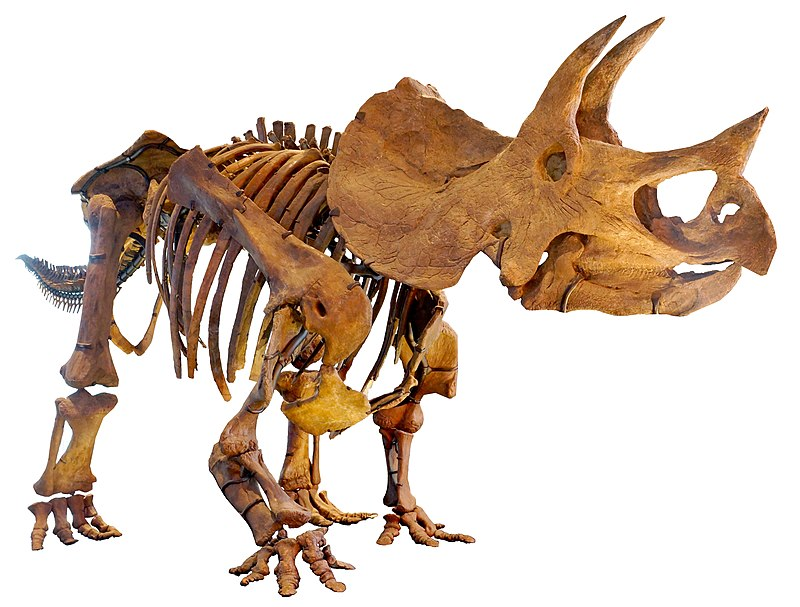
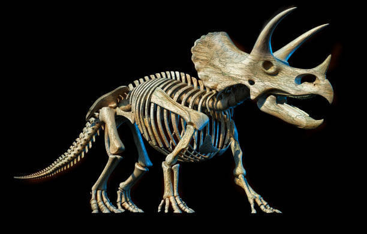
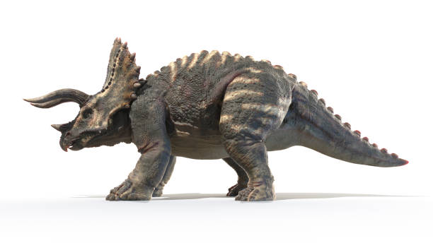
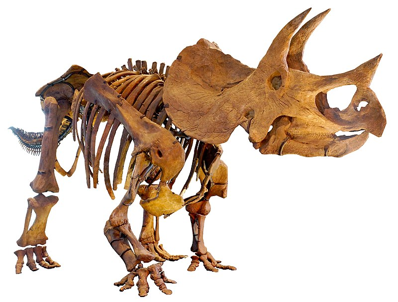
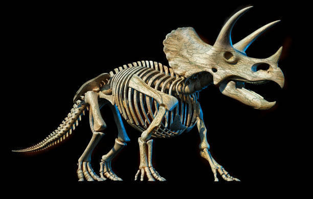
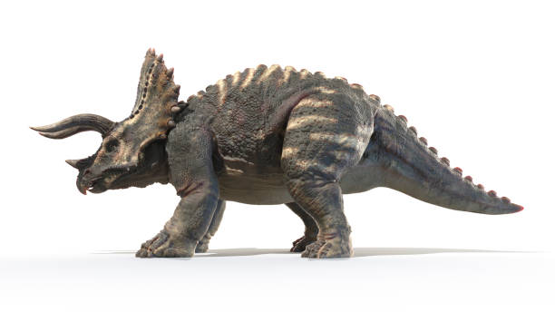

Română
Triceratops, un gen numit de Othniel Charles Marsh în 1889, este unul dintre cei mai cunoscuți dinozauri din perioada Cretacicului târziu, în special din epoca Maastrichtiană. Fosile au fost descoperite în regiuni din SUA (Colorado, Montana, Dakota de Sud, Wyoming) și Canada (Alberta, Saskatchewan). Genul include două specii: Triceratops horridus (specia tip) și Triceratops prorsus. Triceratops a aparținut clasei Reptilia, ordinul Dinosauria, subordinul Ornithischia, infraordinul Ceratopsia, familia Ceratopsidae, subfamilia Chasmosaurinae și tribul Triceratopsini. Acești dinozauri erau ierbivori, cu o lungime estimată între 8 și 9 metri. Aveau un aspect distinctiv caracterizat prin trei coarne faciale (două deasupra ochilor și unul pe nas), un volan osos mare la ceafă și un corp robust. Rămășițele multiple, inclusiv schelete aproape complete, au oferit informații semnificative asupra structurii și stilului lor de viață.
English
Triceratops, a genus named by Othniel Charles Marsh in 1889, is one of the most well-known dinosaurs from the Late Cretaceous period, specifically the Maastrichtian age. Fossils have been discovered in regions of the USA (Colorado, Montana, South Dakota, Wyoming) and Canada (Alberta, Saskatchewan). The genus includes two species: Triceratops horridus (the type species) and Triceratops prorsus. Triceratops belonged to the class Reptilia, order Dinosauria, suborder Ornithischia, infraorder Ceratopsia, family Ceratopsidae, subfamily Chasmosaurinae, and tribe Triceratopsini. These dinosaurs were herbivores, with an estimated length between 8 and 9 meters. They had a distinctive appearance characterized by three facial horns (two above the eyes and one on the nose), a large bony frill at the back of their head, and a robust body. Multiple remains, including nearly complete skeletons, have provided significant insights into their structure and lifestyle.